History of PAF
In 1933, British colonial government of India established the subcontinent’s first Air Force station near Drigh Road, now called PAF Base Faisal. In 1934, this element of the Royal Indian Air Force (RIAF) was extended to the north for operations in NWFP. The RIAF had also contributed to the defeat of Japanese invasion during World War II.
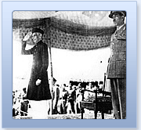
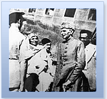
In 1947, the British left sub-continent after dividing it into two sovereign states of India and Pakistan. Pakistan Air Force (PAF) was born immediately afterwards. Distribution of military assets between the new states was to follow. However, India with an inherent resentment towards the creation of Pakistan tried to subvert our capabilities by crippling Pakistan militarily. It denied the then Royal Pakistan Air Force (RPAF) even the officially agreed small portions of weapons, equipment and aircraft allocated by departing British as its legitimate share. Much of what was eventually received from India was inoperable. Crates of equipment contained nothing but scrap and waste. The RPAF got 16 fighter aircraft as its foundation. It started off with one squadron of eight Tempest aircraft and a small remnant of No 1 Squadron Royal Indian Air Force (RIAF) which was subsequently utilized to raise No 5 Squadron.
Within three weeks of independence, Indian hegemonic designs sparked off the first war between Pakistan and India. Pakistan’s young air arm was called upon to fly supply missions with one of the two war weary Dakotas. Contending with the unpredictable weather, the difficult terrain, and the enemy fighters was an uphill task. The strength was replenished with two more Dakotas only as the skirmishes resumed the following winters. In the narrow valleys of Kashmir, the stirring tale of Flying Officer Mukhtar Dogar defiantly scissoring his lumbering Dakota with pursuing RIAF Tempests taking pot-shots at him defined the fighting doctrine of the PAF, defend Pakistan and learn to fight outnumbered. Within the span of a year this young air force had completed 437 mercy drops, delivering more than 500 tons of supplies and food.
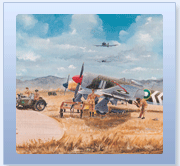
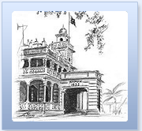
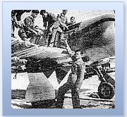
Whilst these brave pioneers were documenting the historic beginning of PAF, the force was faced with the enigma of finding aircraft to fly. However, despite the lack of funds and market places, PAF entered the jet age in August, 1951 with the induction of British built Attackers. Until mid-1950s PAF’s fighter force comprised nearly 100 Hawker Furies and a dwindling number of Tempests. Then, the first air defence radar was installed and the PAF was rapidly setting up its own advanced flying and technical training institutions. F-86 Sabers and T-33 jet trainers were inducted in Whilst these brave pioneers were documenting the historic beginning of PAF, the force was faced with the enigma of finding aircraft to fly. However, despite the lack of funds and market places, PAF entered the jet age in August, 1951 with the induction of British built Attackers. Until mid-1950s PAF’s fighter force comprised nearly 100 Hawker Furies and a dwindling number of Tempests. Then, the first air defence radar was installed and the PAF was rapidly setting up its own advanced flying and technical training institutions. F-86 Sabers and T-33 jet trainers were inducted in PAF as a result of the United States (US) aid.
From 1955 to1965, the Air Force armed its squadrons with the most modern jet fighters and bombers, Sabers and F-104 Starfighters as fighters, B-57s as bombers and the ubiquitous C-130s as transport fleet. The seven years of rigorous training with realistic threat perception, planning and preparation had enabled PAF to inflict a humiliating defeat on the enemy in 1965 when the mutual hostility of the rival neighbours escalated into a war. PAF struck hard its rival and kept it reeling under tactics of shock and unpredictability. Many victories came to PAF pilots who exacted an even retribution on the enemy, leaving it in total disarray. At the end of the war, India had lost 110 aircraft with 19 damaged, not including those destroyed on the ground at night, against a loss of 16 PAF planes. Thus the outnumbered PAF emerged triumphant over a four times larger force, its air defence controllers, engineers, logisticians and hands just as much the heroes as its pilots.
The third war between the South Asian foes began when, in December 1971, the Indian Army crossed into East Pakistan and from the encircling air Bases ten squadrons of the IAF challenged the PAF’s only squadron, No 14, located at Dhaka. The Tail Choppers of 1965 rose heroically to meet the aggressors, and before their squadron was grounded by a bombed out runway, they and their ack ack gunners had destroyed 23 IAF aircraft. The PAF’s Mirages, B-57s, Sabers, F-6s and a few F-104s spearheaded Pakistan’s retaliation from the west. At war’s end IAF had lost 130 aircraft in all. The three-to-one kill ratio that Pakistan scored, however, could not prevent the tragic fall of Dhaka. The trauma of separation of East Pakistan and a preventable military catastrophe affected all Pakistanis deeply and lingered long afterwards. However a stoic recovery was brisk. PAF soon reorganised and reequipped assimilating the new threat environment on the sub-continent.
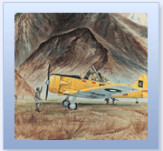
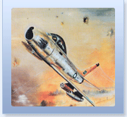
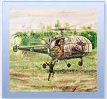
During the Afghan war in the eighties, PAF had to keep a constant vigil on its western border. Despite the fact that PAF was not allowed hot pursuit into Afghanistan, the pilots and the ground controllers together managed to shoot down eight Soviet/Afghan aircraft without a single own loss.
The post-Afghan war period witnessed a resource constraint with the drying up of traditional sources. The immediate need for induction of a hi-tech aircraft was one part of the crises; the sheer sustenance of the fleet was another. Due to economic constraints, PAF went for cost effective purchases like A-5 aircraft and such upgrades as the ROSE, which gave the old Mirages very good nav-attack, weapon delivery, and other capabilities. With this, self-reliance picked up pace and PAF worked on Griffo radar, Mistral and Anza missiles simultaneously. To keep the ageing weapon systems & aircraft from becoming obsolete, chaff and flares dispensers, radar warning receivers, and laser automation for better weapon delivery were added to the old aircrafts.
The succeeding years witnessed many significant developments including the milestones achieved by the Pakistan Aeronautical Complex (PAC), Kamra such as F-7P overhaul, aircraft engines maintenance, the co–production of K-8 and Super Mushshaq aircraft, the quality standards achieved by Kamra Avionics and Radar Factory. Project JF-17 Thunder was conceived to replace the PAF’s ageing, medium-tech fleet of Mirages, F-7, and A-5 aircraft that would progressively retire from service. It is planned to be a multi-role, light-weight day/night all weather fighter. It would be able to attack ground targets and ships, and engage enemy aircraft at considerable ranges. The aircraft will be inducted in PAF by 2006 and will be co-produced at PAC Kamra. This technological edge will secure both better national security environment and economic benefits for the country.
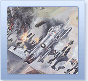
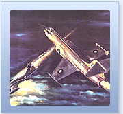
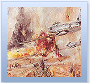
Today, new maintenance concepts and facilities are based on a more direct communication, optimum use of software database and reliable electronic networks. Accompanying the technological developments, education and training are duly accentuated with special emphasis on R & D.
In the wake of war on terrorism and with the reality of living with an implacable opponent, Pakistan Air Force keeps on an all-time vigil. During Ops- Sentinel 2001-2002, when India had amassed its forces on Pak borders, PAF remained ready for dealing a telling blow to the enemy.
Derived from the national military objectives, the PAF leadership has clearly visualised and laid down the operational doctrine for the nation’s air arm. PAF takes its pick of the finest young people in the land. It has now acquired new depths of human skills and initiative. Together, all branches of PAF are delivering unprecedented serviceability rates and efficient management of all resources. Poised on the threshold of tomorrow, PAF remains, as the Quaid said, “Second to None”; fully abreast with the requisite will and mechanism to live by its standards in the coming millennium and beyond.